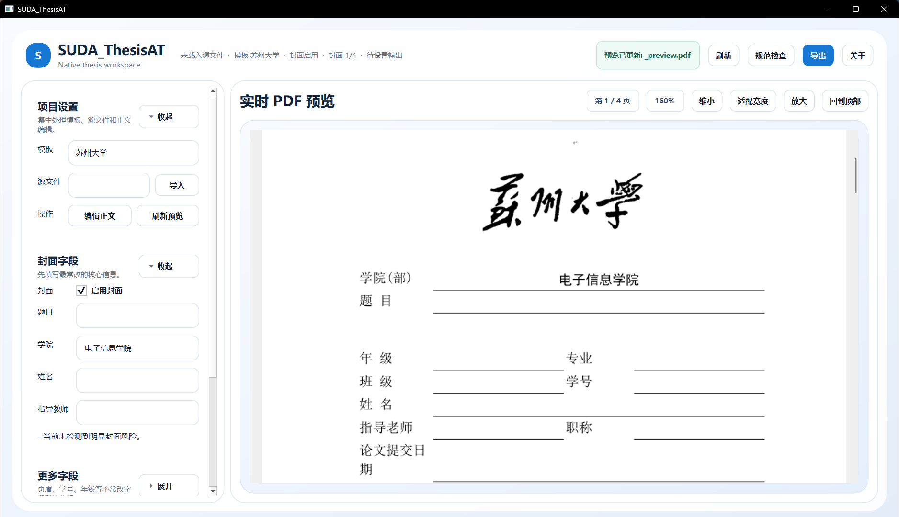

导入正文
从 Word 文档进入统一工作区。
将 Word 正文、封面信息与 PDF 预览放进同一个安静的本地工作台。专注最后一公里的规范与交付。
离线运行 · Word / PDF / DOCX
SUDA ThesisAT 不是泛化写作平台。它服务于论文完成前最易出错的流程：导入正文、补全封面、核对版式、导出成果。
原生桌面架构确保文件留在本地；预览优先的界面让每一次格式调整都看得见。
四步，让格式从不确定变得可控。
从 Word 文档进入统一工作区。
集中填写题目、学院与导师等核心字段。
持续查看 PDF 结果，及时发现版式问题。
输出 PDF 与 DOCX，用于提交和归档。
清晰的层次、轻量的状态反馈，以及不打断思路的字段编辑。
01 — LIVE PDF PREVIEW